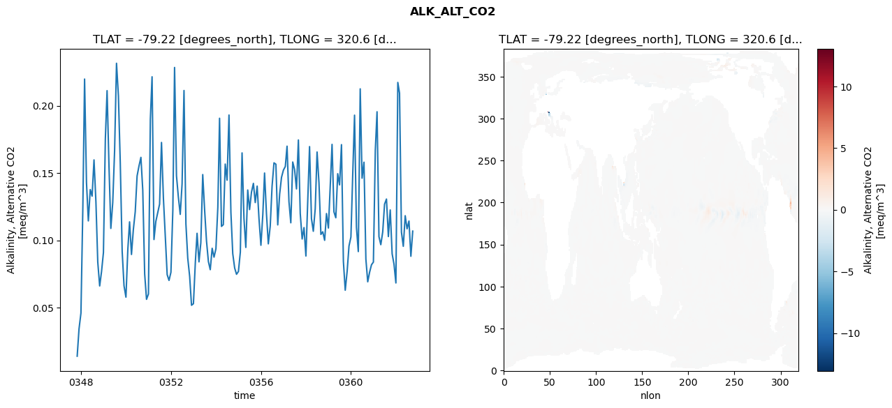
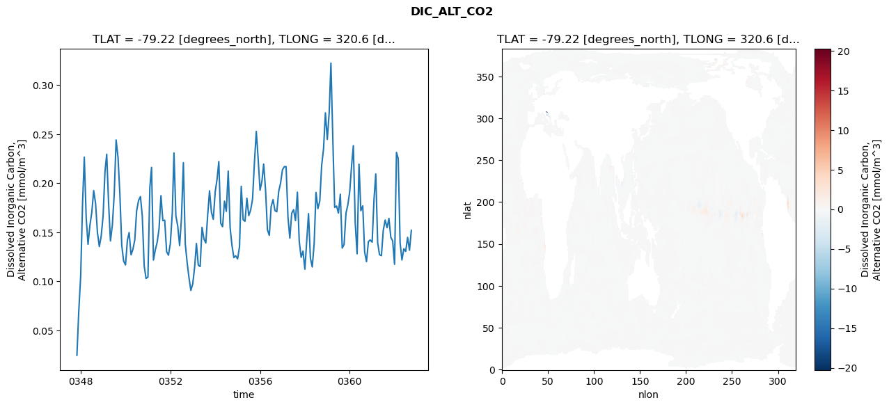
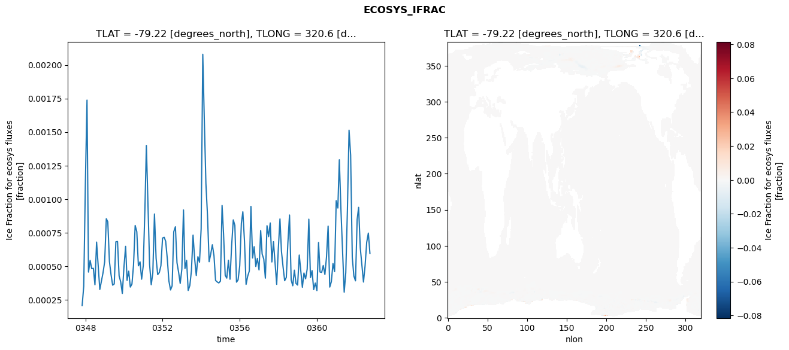
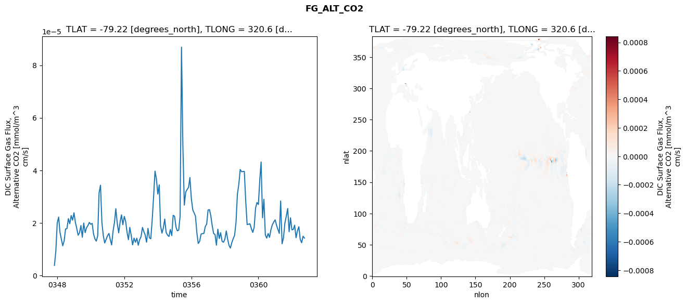

glb-dor_North_Atlantic_basin_037_1999-10-01_00151#
Simulation details#
Case: smyle.cdr-atlas-v0.glb-dor_North_Atlantic_basin_037_1999-10-01_00151.001
Basin: North_Atlantic_basin
Polygon: 37.0
Start date: 1999-10
Show code cell source Hide code cell source
import xarray as xr
import matplotlib.pyplot as plt
Show code cell source Hide code cell source
zarr_store = "/path/to/zarr/store"
# Parameters
zarr_store = "/global/cfs/projectdirs/m4746/Projects/Ocean-CDR-Atlas-v0/data/validation/smyle.cdr-atlas-v0.glb-dor_North_Atlantic_basin_037_1999-10-01_00151.001.validation.zarr"
Show code cell source Hide code cell source
%%time
ds_o = xr.open_zarr(zarr_store).compute()
ds_o
CPU times: user 552 ms, sys: 472 ms, total: 1.02 s
Wall time: 1.29 s
<xarray.Dataset> Size: 2MB
Dimensions: (nlat: 384, nlon: 320, time: 180)
Coordinates:
TLAT float64 8B -79.22
TLONG float64 8B 320.6
ULAT float64 8B -78.95
ULONG float64 8B 321.1
* time (time) object 1kB 0347-11-01 00:00:00 ... 0362-10-01 0...
z_t float32 4B 500.0
Dimensions without coordinates: nlat, nlon
Data variables:
ALK_ALT_CO2_diff (nlat, nlon) float32 492kB nan nan nan ... nan nan nan
ALK_ALT_CO2_rmse (time) float64 1kB 0.01382 0.03414 ... 0.08813 0.1068
DIC_ALT_CO2_diff (nlat, nlon) float32 492kB nan nan nan ... nan nan nan
DIC_ALT_CO2_rmse (time) float64 1kB 0.02467 0.06941 ... 0.1317 0.1521
ECOSYS_IFRAC_diff (nlat, nlon) float32 492kB nan nan nan ... nan nan nan
ECOSYS_IFRAC_rmse (time) float64 1kB 0.0002066 0.0003499 ... 0.0005948
FG_ALT_CO2_diff (nlat, nlon) float32 492kB nan nan nan ... nan nan nan
FG_ALT_CO2_rmse (time) float64 1kB 3.785e-06 9.025e-06 ... 1.418e-05xarray.Dataset
- nlat: 384
- nlon: 320
- time: 180
- TLAT()float64-79.22
- long_name :
- array of t-grid latitudes
- units :
- degrees_north
array(-79.22052261)
- TLONG()float64320.6
- long_name :
- array of t-grid longitudes
- units :
- degrees_east
array(320.56250892)
- ULAT()float64-78.95
- long_name :
- array of u-grid latitudes
- units :
- degrees_north
array(-78.95289509)
- ULONG()float64321.1
- long_name :
- array of u-grid longitudes
- units :
- degrees_east
array(321.12500894)
- time(time)object0347-11-01 00:00:00 ... 0362-10-...
- bounds :
- time_bound
- long_name :
- time
array([cftime.DatetimeNoLeap(347, 11, 1, 0, 0, 0, 0, has_year_zero=True), cftime.DatetimeNoLeap(347, 12, 1, 0, 0, 0, 0, has_year_zero=True), cftime.DatetimeNoLeap(348, 1, 1, 0, 0, 0, 0, has_year_zero=True), cftime.DatetimeNoLeap(348, 2, 1, 0, 0, 0, 0, has_year_zero=True), cftime.DatetimeNoLeap(348, 3, 1, 0, 0, 0, 0, has_year_zero=True), cftime.DatetimeNoLeap(348, 4, 1, 0, 0, 0, 0, has_year_zero=True), cftime.DatetimeNoLeap(348, 5, 1, 0, 0, 0, 0, has_year_zero=True), cftime.DatetimeNoLeap(348, 6, 1, 0, 0, 0, 0, has_year_zero=True), cftime.DatetimeNoLeap(348, 7, 1, 0, 0, 0, 0, has_year_zero=True), cftime.DatetimeNoLeap(348, 8, 1, 0, 0, 0, 0, has_year_zero=True), cftime.DatetimeNoLeap(348, 9, 1, 0, 0, 0, 0, has_year_zero=True), cftime.DatetimeNoLeap(348, 10, 1, 0, 0, 0, 0, has_year_zero=True), cftime.DatetimeNoLeap(348, 11, 1, 0, 0, 0, 0, has_year_zero=True), cftime.DatetimeNoLeap(348, 12, 1, 0, 0, 0, 0, has_year_zero=True), cftime.DatetimeNoLeap(349, 1, 1, 0, 0, 0, 0, has_year_zero=True), cftime.DatetimeNoLeap(349, 2, 1, 0, 0, 0, 0, has_year_zero=True), cftime.DatetimeNoLeap(349, 3, 1, 0, 0, 0, 0, has_year_zero=True), cftime.DatetimeNoLeap(349, 4, 1, 0, 0, 0, 0, has_year_zero=True), cftime.DatetimeNoLeap(349, 5, 1, 0, 0, 0, 0, has_year_zero=True), cftime.DatetimeNoLeap(349, 6, 1, 0, 0, 0, 0, has_year_zero=True), cftime.DatetimeNoLeap(349, 7, 1, 0, 0, 0, 0, has_year_zero=True), cftime.DatetimeNoLeap(349, 8, 1, 0, 0, 0, 0, has_year_zero=True), cftime.DatetimeNoLeap(349, 9, 1, 0, 0, 0, 0, has_year_zero=True), cftime.DatetimeNoLeap(349, 10, 1, 0, 0, 0, 0, has_year_zero=True), cftime.DatetimeNoLeap(349, 11, 1, 0, 0, 0, 0, has_year_zero=True), cftime.DatetimeNoLeap(349, 12, 1, 0, 0, 0, 0, has_year_zero=True), cftime.DatetimeNoLeap(350, 1, 1, 0, 0, 0, 0, has_year_zero=True), cftime.DatetimeNoLeap(350, 2, 1, 0, 0, 0, 0, has_year_zero=True), cftime.DatetimeNoLeap(350, 3, 1, 0, 0, 0, 0, has_year_zero=True), cftime.DatetimeNoLeap(350, 4, 1, 0, 0, 0, 0, has_year_zero=True), cftime.DatetimeNoLeap(350, 5, 1, 0, 0, 0, 0, has_year_zero=True), cftime.DatetimeNoLeap(350, 6, 1, 0, 0, 0, 0, has_year_zero=True), cftime.DatetimeNoLeap(350, 7, 1, 0, 0, 0, 0, has_year_zero=True), cftime.DatetimeNoLeap(350, 8, 1, 0, 0, 0, 0, has_year_zero=True), cftime.DatetimeNoLeap(350, 9, 1, 0, 0, 0, 0, has_year_zero=True), cftime.DatetimeNoLeap(350, 10, 1, 0, 0, 0, 0, has_year_zero=True), cftime.DatetimeNoLeap(350, 11, 1, 0, 0, 0, 0, has_year_zero=True), cftime.DatetimeNoLeap(350, 12, 1, 0, 0, 0, 0, has_year_zero=True), cftime.DatetimeNoLeap(351, 1, 1, 0, 0, 0, 0, has_year_zero=True), cftime.DatetimeNoLeap(351, 2, 1, 0, 0, 0, 0, has_year_zero=True), cftime.DatetimeNoLeap(351, 3, 1, 0, 0, 0, 0, has_year_zero=True), cftime.DatetimeNoLeap(351, 4, 1, 0, 0, 0, 0, has_year_zero=True), cftime.DatetimeNoLeap(351, 5, 1, 0, 0, 0, 0, has_year_zero=True), cftime.DatetimeNoLeap(351, 6, 1, 0, 0, 0, 0, has_year_zero=True), cftime.DatetimeNoLeap(351, 7, 1, 0, 0, 0, 0, has_year_zero=True), cftime.DatetimeNoLeap(351, 8, 1, 0, 0, 0, 0, has_year_zero=True), cftime.DatetimeNoLeap(351, 9, 1, 0, 0, 0, 0, has_year_zero=True), cftime.DatetimeNoLeap(351, 10, 1, 0, 0, 0, 0, has_year_zero=True), cftime.DatetimeNoLeap(351, 11, 1, 0, 0, 0, 0, has_year_zero=True), cftime.DatetimeNoLeap(351, 12, 1, 0, 0, 0, 0, has_year_zero=True), cftime.DatetimeNoLeap(352, 1, 1, 0, 0, 0, 0, has_year_zero=True), cftime.DatetimeNoLeap(352, 2, 1, 0, 0, 0, 0, has_year_zero=True), cftime.DatetimeNoLeap(352, 3, 1, 0, 0, 0, 0, has_year_zero=True), cftime.DatetimeNoLeap(352, 4, 1, 0, 0, 0, 0, has_year_zero=True), cftime.DatetimeNoLeap(352, 5, 1, 0, 0, 0, 0, has_year_zero=True), cftime.DatetimeNoLeap(352, 6, 1, 0, 0, 0, 0, has_year_zero=True), cftime.DatetimeNoLeap(352, 7, 1, 0, 0, 0, 0, has_year_zero=True), cftime.DatetimeNoLeap(352, 8, 1, 0, 0, 0, 0, has_year_zero=True), cftime.DatetimeNoLeap(352, 9, 1, 0, 0, 0, 0, has_year_zero=True), cftime.DatetimeNoLeap(352, 10, 1, 0, 0, 0, 0, has_year_zero=True), cftime.DatetimeNoLeap(352, 11, 1, 0, 0, 0, 0, has_year_zero=True), cftime.DatetimeNoLeap(352, 12, 1, 0, 0, 0, 0, has_year_zero=True), cftime.DatetimeNoLeap(353, 1, 1, 0, 0, 0, 0, has_year_zero=True), cftime.DatetimeNoLeap(353, 2, 1, 0, 0, 0, 0, has_year_zero=True), cftime.DatetimeNoLeap(353, 3, 1, 0, 0, 0, 0, has_year_zero=True), cftime.DatetimeNoLeap(353, 4, 1, 0, 0, 0, 0, has_year_zero=True), cftime.DatetimeNoLeap(353, 5, 1, 0, 0, 0, 0, has_year_zero=True), cftime.DatetimeNoLeap(353, 6, 1, 0, 0, 0, 0, has_year_zero=True), cftime.DatetimeNoLeap(353, 7, 1, 0, 0, 0, 0, has_year_zero=True), cftime.DatetimeNoLeap(353, 8, 1, 0, 0, 0, 0, has_year_zero=True), cftime.DatetimeNoLeap(353, 9, 1, 0, 0, 0, 0, has_year_zero=True), cftime.DatetimeNoLeap(353, 10, 1, 0, 0, 0, 0, has_year_zero=True), cftime.DatetimeNoLeap(353, 11, 1, 0, 0, 0, 0, has_year_zero=True), cftime.DatetimeNoLeap(353, 12, 1, 0, 0, 0, 0, has_year_zero=True), cftime.DatetimeNoLeap(354, 1, 1, 0, 0, 0, 0, has_year_zero=True), cftime.DatetimeNoLeap(354, 2, 1, 0, 0, 0, 0, has_year_zero=True), cftime.DatetimeNoLeap(354, 3, 1, 0, 0, 0, 0, has_year_zero=True), cftime.DatetimeNoLeap(354, 4, 1, 0, 0, 0, 0, has_year_zero=True), cftime.DatetimeNoLeap(354, 5, 1, 0, 0, 0, 0, has_year_zero=True), cftime.DatetimeNoLeap(354, 6, 1, 0, 0, 0, 0, has_year_zero=True), cftime.DatetimeNoLeap(354, 7, 1, 0, 0, 0, 0, has_year_zero=True), cftime.DatetimeNoLeap(354, 8, 1, 0, 0, 0, 0, has_year_zero=True), cftime.DatetimeNoLeap(354, 9, 1, 0, 0, 0, 0, has_year_zero=True), cftime.DatetimeNoLeap(354, 10, 1, 0, 0, 0, 0, has_year_zero=True), cftime.DatetimeNoLeap(354, 11, 1, 0, 0, 0, 0, has_year_zero=True), cftime.DatetimeNoLeap(354, 12, 1, 0, 0, 0, 0, has_year_zero=True), cftime.DatetimeNoLeap(355, 1, 1, 0, 0, 0, 0, has_year_zero=True), cftime.DatetimeNoLeap(355, 2, 1, 0, 0, 0, 0, has_year_zero=True), cftime.DatetimeNoLeap(355, 3, 1, 0, 0, 0, 0, has_year_zero=True), cftime.DatetimeNoLeap(355, 4, 1, 0, 0, 0, 0, has_year_zero=True), cftime.DatetimeNoLeap(355, 5, 1, 0, 0, 0, 0, has_year_zero=True), cftime.DatetimeNoLeap(355, 6, 1, 0, 0, 0, 0, has_year_zero=True), cftime.DatetimeNoLeap(355, 7, 1, 0, 0, 0, 0, has_year_zero=True), cftime.DatetimeNoLeap(355, 8, 1, 0, 0, 0, 0, has_year_zero=True), cftime.DatetimeNoLeap(355, 9, 1, 0, 0, 0, 0, has_year_zero=True), cftime.DatetimeNoLeap(355, 10, 1, 0, 0, 0, 0, has_year_zero=True), cftime.DatetimeNoLeap(355, 11, 1, 0, 0, 0, 0, has_year_zero=True), cftime.DatetimeNoLeap(355, 12, 1, 0, 0, 0, 0, has_year_zero=True), cftime.DatetimeNoLeap(356, 1, 1, 0, 0, 0, 0, has_year_zero=True), cftime.DatetimeNoLeap(356, 2, 1, 0, 0, 0, 0, has_year_zero=True), cftime.DatetimeNoLeap(356, 3, 1, 0, 0, 0, 0, has_year_zero=True), cftime.DatetimeNoLeap(356, 4, 1, 0, 0, 0, 0, has_year_zero=True), cftime.DatetimeNoLeap(356, 5, 1, 0, 0, 0, 0, has_year_zero=True), cftime.DatetimeNoLeap(356, 6, 1, 0, 0, 0, 0, has_year_zero=True), cftime.DatetimeNoLeap(356, 7, 1, 0, 0, 0, 0, has_year_zero=True), cftime.DatetimeNoLeap(356, 8, 1, 0, 0, 0, 0, has_year_zero=True), cftime.DatetimeNoLeap(356, 9, 1, 0, 0, 0, 0, has_year_zero=True), cftime.DatetimeNoLeap(356, 10, 1, 0, 0, 0, 0, has_year_zero=True), cftime.DatetimeNoLeap(356, 11, 1, 0, 0, 0, 0, has_year_zero=True), cftime.DatetimeNoLeap(356, 12, 1, 0, 0, 0, 0, has_year_zero=True), cftime.DatetimeNoLeap(357, 1, 1, 0, 0, 0, 0, has_year_zero=True), cftime.DatetimeNoLeap(357, 2, 1, 0, 0, 0, 0, has_year_zero=True), cftime.DatetimeNoLeap(357, 3, 1, 0, 0, 0, 0, has_year_zero=True), cftime.DatetimeNoLeap(357, 4, 1, 0, 0, 0, 0, has_year_zero=True), cftime.DatetimeNoLeap(357, 5, 1, 0, 0, 0, 0, has_year_zero=True), cftime.DatetimeNoLeap(357, 6, 1, 0, 0, 0, 0, has_year_zero=True), cftime.DatetimeNoLeap(357, 7, 1, 0, 0, 0, 0, has_year_zero=True), cftime.DatetimeNoLeap(357, 8, 1, 0, 0, 0, 0, has_year_zero=True), cftime.DatetimeNoLeap(357, 9, 1, 0, 0, 0, 0, has_year_zero=True), cftime.DatetimeNoLeap(357, 10, 1, 0, 0, 0, 0, has_year_zero=True), cftime.DatetimeNoLeap(357, 11, 1, 0, 0, 0, 0, has_year_zero=True), cftime.DatetimeNoLeap(357, 12, 1, 0, 0, 0, 0, has_year_zero=True), cftime.DatetimeNoLeap(358, 1, 1, 0, 0, 0, 0, has_year_zero=True), cftime.DatetimeNoLeap(358, 2, 1, 0, 0, 0, 0, has_year_zero=True), cftime.DatetimeNoLeap(358, 3, 1, 0, 0, 0, 0, has_year_zero=True), cftime.DatetimeNoLeap(358, 4, 1, 0, 0, 0, 0, has_year_zero=True), cftime.DatetimeNoLeap(358, 5, 1, 0, 0, 0, 0, has_year_zero=True), cftime.DatetimeNoLeap(358, 6, 1, 0, 0, 0, 0, has_year_zero=True), cftime.DatetimeNoLeap(358, 7, 1, 0, 0, 0, 0, has_year_zero=True), cftime.DatetimeNoLeap(358, 8, 1, 0, 0, 0, 0, has_year_zero=True), cftime.DatetimeNoLeap(358, 9, 1, 0, 0, 0, 0, has_year_zero=True), cftime.DatetimeNoLeap(358, 10, 1, 0, 0, 0, 0, has_year_zero=True), cftime.DatetimeNoLeap(358, 11, 1, 0, 0, 0, 0, has_year_zero=True), cftime.DatetimeNoLeap(358, 12, 1, 0, 0, 0, 0, has_year_zero=True), cftime.DatetimeNoLeap(359, 1, 1, 0, 0, 0, 0, has_year_zero=True), cftime.DatetimeNoLeap(359, 2, 1, 0, 0, 0, 0, has_year_zero=True), cftime.DatetimeNoLeap(359, 3, 1, 0, 0, 0, 0, has_year_zero=True), cftime.DatetimeNoLeap(359, 4, 1, 0, 0, 0, 0, has_year_zero=True), cftime.DatetimeNoLeap(359, 5, 1, 0, 0, 0, 0, has_year_zero=True), cftime.DatetimeNoLeap(359, 6, 1, 0, 0, 0, 0, has_year_zero=True), cftime.DatetimeNoLeap(359, 7, 1, 0, 0, 0, 0, has_year_zero=True), cftime.DatetimeNoLeap(359, 8, 1, 0, 0, 0, 0, has_year_zero=True), cftime.DatetimeNoLeap(359, 9, 1, 0, 0, 0, 0, has_year_zero=True), cftime.DatetimeNoLeap(359, 10, 1, 0, 0, 0, 0, has_year_zero=True), cftime.DatetimeNoLeap(359, 11, 1, 0, 0, 0, 0, has_year_zero=True), cftime.DatetimeNoLeap(359, 12, 1, 0, 0, 0, 0, has_year_zero=True), cftime.DatetimeNoLeap(360, 1, 1, 0, 0, 0, 0, has_year_zero=True), cftime.DatetimeNoLeap(360, 2, 1, 0, 0, 0, 0, has_year_zero=True), cftime.DatetimeNoLeap(360, 3, 1, 0, 0, 0, 0, has_year_zero=True), cftime.DatetimeNoLeap(360, 4, 1, 0, 0, 0, 0, has_year_zero=True), cftime.DatetimeNoLeap(360, 5, 1, 0, 0, 0, 0, has_year_zero=True), cftime.DatetimeNoLeap(360, 6, 1, 0, 0, 0, 0, has_year_zero=True), cftime.DatetimeNoLeap(360, 7, 1, 0, 0, 0, 0, has_year_zero=True), cftime.DatetimeNoLeap(360, 8, 1, 0, 0, 0, 0, has_year_zero=True), cftime.DatetimeNoLeap(360, 9, 1, 0, 0, 0, 0, has_year_zero=True), cftime.DatetimeNoLeap(360, 10, 1, 0, 0, 0, 0, has_year_zero=True), cftime.DatetimeNoLeap(360, 11, 1, 0, 0, 0, 0, has_year_zero=True), cftime.DatetimeNoLeap(360, 12, 1, 0, 0, 0, 0, has_year_zero=True), cftime.DatetimeNoLeap(361, 1, 1, 0, 0, 0, 0, has_year_zero=True), cftime.DatetimeNoLeap(361, 2, 1, 0, 0, 0, 0, has_year_zero=True), cftime.DatetimeNoLeap(361, 3, 1, 0, 0, 0, 0, has_year_zero=True), cftime.DatetimeNoLeap(361, 4, 1, 0, 0, 0, 0, has_year_zero=True), cftime.DatetimeNoLeap(361, 5, 1, 0, 0, 0, 0, has_year_zero=True), cftime.DatetimeNoLeap(361, 6, 1, 0, 0, 0, 0, has_year_zero=True), cftime.DatetimeNoLeap(361, 7, 1, 0, 0, 0, 0, has_year_zero=True), cftime.DatetimeNoLeap(361, 8, 1, 0, 0, 0, 0, has_year_zero=True), cftime.DatetimeNoLeap(361, 9, 1, 0, 0, 0, 0, has_year_zero=True), cftime.DatetimeNoLeap(361, 10, 1, 0, 0, 0, 0, has_year_zero=True), cftime.DatetimeNoLeap(361, 11, 1, 0, 0, 0, 0, has_year_zero=True), cftime.DatetimeNoLeap(361, 12, 1, 0, 0, 0, 0, has_year_zero=True), cftime.DatetimeNoLeap(362, 1, 1, 0, 0, 0, 0, has_year_zero=True), cftime.DatetimeNoLeap(362, 2, 1, 0, 0, 0, 0, has_year_zero=True), cftime.DatetimeNoLeap(362, 3, 1, 0, 0, 0, 0, has_year_zero=True), cftime.DatetimeNoLeap(362, 4, 1, 0, 0, 0, 0, has_year_zero=True), cftime.DatetimeNoLeap(362, 5, 1, 0, 0, 0, 0, has_year_zero=True), cftime.DatetimeNoLeap(362, 6, 1, 0, 0, 0, 0, has_year_zero=True), cftime.DatetimeNoLeap(362, 7, 1, 0, 0, 0, 0, has_year_zero=True), cftime.DatetimeNoLeap(362, 8, 1, 0, 0, 0, 0, has_year_zero=True), cftime.DatetimeNoLeap(362, 9, 1, 0, 0, 0, 0, has_year_zero=True), cftime.DatetimeNoLeap(362, 10, 1, 0, 0, 0, 0, has_year_zero=True)], dtype=object) - z_t()float32500.0
- long_name :
- depth from surface to midpoint of layer
- positive :
- down
- units :
- centimeters
- valid_max :
- 537500.0
- valid_min :
- 500.0
array(500., dtype=float32)
- ALK_ALT_CO2_diff(nlat, nlon)float32nan nan nan nan ... nan nan nan nan
- cell_methods :
- time: mean
- grid_loc :
- 3111
- long_name :
- Alkalinity, Alternative CO2
- units :
- meq/m^3
array([[ nan, nan, nan, ..., nan, nan, nan], [ nan, nan, nan, ..., nan, nan, nan], [0.01123047, 0.04467773, 0.00732422, ..., nan, nan, nan], ..., [ nan, nan, nan, ..., nan, nan, nan], [ nan, nan, nan, ..., nan, nan, nan], [ nan, nan, nan, ..., nan, nan, nan]], dtype=float32) - ALK_ALT_CO2_rmse(time)float640.01382 0.03414 ... 0.08813 0.1068
- cell_methods :
- time: mean
- grid_loc :
- 3111
- long_name :
- Alkalinity, Alternative CO2
- units :
- meq/m^3
array([0.01381972, 0.03414371, 0.04585335, 0.12483593, 0.21986178, 0.14287445, 0.11442086, 0.13770297, 0.13282125, 0.15975861, 0.12852219, 0.08379364, 0.06605127, 0.07669358, 0.09092632, 0.17532566, 0.21123481, 0.15530352, 0.10882691, 0.12811238, 0.16650856, 0.23159938, 0.20722005, 0.15768619, 0.09163845, 0.06611575, 0.05772946, 0.09345761, 0.11368932, 0.08945365, 0.10786341, 0.12126535, 0.14783261, 0.15526778, 0.16163609, 0.1373182 , 0.07493846, 0.05609234, 0.0600519 , 0.18990262, 0.22155672, 0.10056468, 0.11400235, 0.12061056, 0.12686636, 0.17272082, 0.13126201, 0.10308238, 0.07446256, 0.07015774, 0.07622015, 0.12250608, 0.22848509, 0.14799808, 0.13241567, 0.11926715, 0.14195486, 0.21135031, 0.11212759, 0.08670788, 0.07310649, 0.05169085, 0.05283194, 0.08357846, 0.10517944, 0.08396499, 0.09811479, 0.14884868, 0.12293863, 0.09956901, 0.08417763, 0.07816075, 0.09402796, 0.08747001, 0.09368144, 0.12453003, 0.19070947, 0.11032545, 0.11160653, 0.15664907, 0.14469898, 0.19311298, 0.12072139, 0.0900622 , 0.07938694, 0.07472982, 0.0767908 , 0.09118914, 0.16495672, 0.11631371, 0.09469378, 0.13736574, 0.12283503, 0.13585415, 0.14229484, 0.12805794, 0.14026564, 0.1159117 , 0.09629995, 0.11932321, 0.14999344, 0.11974101, 0.09736431, 0.11050869, 0.14025648, 0.1575579 , 0.15657447, 0.11144454, 0.13435179, 0.14678508, 0.15216861, 0.15488298, 0.16995174, 0.12876402, 0.11300406, 0.15818167, 0.15264306, 0.1381998 , 0.17457292, 0.11988964, 0.100966 , 0.10943695, 0.08831136, 0.13074951, 0.16964266, 0.11613111, 0.10670658, 0.12343378, 0.16562371, 0.14266004, 0.10435528, 0.10629551, 0.0999898 , 0.11985628, 0.10911817, 0.14166499, 0.1712978 , 0.12111092, 0.11673099, 0.14948379, 0.14118758, 0.17109164, 0.08432803, 0.0628764 , 0.07696552, 0.09574735, 0.10241055, 0.15107159, 0.19300433, 0.10961086, 0.09161783, 0.2125792 , 0.14615673, 0.15803969, 0.08592912, 0.06914637, 0.07637854, 0.08180339, 0.08380139, 0.16694095, 0.19554055, 0.10272731, 0.09673279, 0.10615975, 0.12684553, 0.13065461, 0.10278072, 0.12253801, 0.08991789, 0.08231534, 0.06827403, 0.21733992, 0.20939552, 0.10599956, 0.09552966, 0.1182548 , 0.10851575, 0.11429896, 0.08812505, 0.1068193 ]) - DIC_ALT_CO2_diff(nlat, nlon)float32nan nan nan nan ... nan nan nan nan
- cell_methods :
- time: mean
- grid_loc :
- 3111
- long_name :
- Dissolved Inorganic Carbon, Alternative CO2
- units :
- mmol/m^3
array([[ nan, nan, nan, ..., nan, nan, nan], [ nan, nan, nan, ..., nan, nan, nan], [0.0168457 , 0.04882812, 0.01171875, ..., nan, nan, nan], ..., [ nan, nan, nan, ..., nan, nan, nan], [ nan, nan, nan, ..., nan, nan, nan], [ nan, nan, nan, ..., nan, nan, nan]], dtype=float32) - DIC_ALT_CO2_rmse(time)float640.02467 0.06941 ... 0.1317 0.1521
- cell_methods :
- time: mean
- grid_loc :
- 3111
- long_name :
- Dissolved Inorganic Carbon, Alternative CO2
- units :
- mmol/m^3
array([0.02467177, 0.06940525, 0.10523611, 0.18006999, 0.22657717, 0.16463308, 0.13784142, 0.15745001, 0.17030984, 0.19250894, 0.17929929, 0.14981494, 0.13550239, 0.146181 , 0.1665534 , 0.21209973, 0.22959903, 0.17893801, 0.14121594, 0.15740523, 0.18847943, 0.24410703, 0.22639884, 0.18915536, 0.13660241, 0.12075014, 0.11679398, 0.14203591, 0.14974859, 0.12706524, 0.13250678, 0.14220671, 0.1719042 , 0.18244324, 0.18643496, 0.16664944, 0.11591733, 0.10302212, 0.10431418, 0.19561762, 0.21624504, 0.12179388, 0.13209725, 0.14008593, 0.15382292, 0.1874275 , 0.16190405, 0.16239962, 0.13035705, 0.12671134, 0.13874149, 0.1692319 , 0.23093327, 0.16672344, 0.15654546, 0.13647265, 0.16466539, 0.22100575, 0.13812706, 0.11933722, 0.1034782 , 0.09079477, 0.09762381, 0.11497818, 0.13864178, 0.11657688, 0.11515632, 0.15508496, 0.14343119, 0.13912033, 0.16766426, 0.19231537, 0.1703227 , 0.16332997, 0.19122038, 0.20450276, 0.22209934, 0.15924183, 0.15570614, 0.18174452, 0.17141632, 0.21247635, 0.15484401, 0.13671585, 0.12426241, 0.12605811, 0.12295178, 0.13541686, 0.19689969, 0.1628091 , 0.16123183, 0.18473793, 0.16709422, 0.1726963 , 0.18372637, 0.22033846, 0.25285065, 0.22522599, 0.19297587, 0.20217167, 0.21953844, 0.19299206, 0.15270837, 0.14691025, 0.17624537, 0.18336012, 0.17210914, 0.17097277, 0.19175473, 0.20011671, 0.21373643, 0.21697097, 0.21692657, 0.16529913, 0.1440825 , 0.16945421, 0.1730665 , 0.1620202 , 0.19090437, 0.14095155, 0.124532 , 0.1309354 , 0.11243507, 0.14186899, 0.16907216, 0.12364805, 0.11469912, 0.13867014, 0.19066466, 0.17416646, 0.18217866, 0.21817082, 0.23529987, 0.27173519, 0.24468868, 0.27240437, 0.32243741, 0.24456299, 0.17539187, 0.17679101, 0.16964433, 0.18883492, 0.13395108, 0.13760954, 0.16958346, 0.17787802, 0.19154106, 0.21842169, 0.23835475, 0.15898177, 0.12812539, 0.21946291, 0.17199646, 0.17696552, 0.12988004, 0.1201414 , 0.14059872, 0.14223799, 0.13999548, 0.18451978, 0.20948589, 0.13934584, 0.12718496, 0.12626362, 0.15200031, 0.16257576, 0.1546622 , 0.16418379, 0.14485656, 0.14129335, 0.11738385, 0.23143248, 0.22517131, 0.13945594, 0.12184531, 0.13324537, 0.13062078, 0.14485823, 0.13173939, 0.15211888]) - ECOSYS_IFRAC_diff(nlat, nlon)float32nan nan nan nan ... nan nan nan nan
- cell_methods :
- time: mean
- grid_loc :
- 2110
- long_name :
- Ice Fraction for ecosys fluxes
- units :
- fraction
array([[ nan, nan, nan, ..., nan, nan, nan], [ nan, nan, nan, ..., nan, nan, nan], [2.9802322e-07, 1.2516975e-06, 3.5166740e-06, ..., nan, nan, nan], ..., [ nan, nan, nan, ..., nan, nan, nan], [ nan, nan, nan, ..., nan, nan, nan], [ nan, nan, nan, ..., nan, nan, nan]], dtype=float32) - ECOSYS_IFRAC_rmse(time)float640.0002066 0.0003499 ... 0.0005948
- cell_methods :
- time: mean
- grid_loc :
- 2110
- long_name :
- Ice Fraction for ecosys fluxes
- units :
- fraction
array([0.00020655, 0.00034993, 0.00111353, 0.00173773, 0.00045617, 0.00054278, 0.00048161, 0.00048442, 0.00036135, 0.00067976, 0.00050064, 0.00032629, 0.00039037, 0.00045093, 0.00053286, 0.00085396, 0.00083101, 0.00053494, 0.00043816, 0.00035861, 0.00036746, 0.00068185, 0.00068406, 0.0004283 , 0.00038215, 0.000297 , 0.00049409, 0.00064801, 0.00039418, 0.00046284, 0.0003444 , 0.00036665, 0.00050852, 0.00080345, 0.00075704, 0.00050277, 0.00053244, 0.00040309, 0.0005048 , 0.00091945, 0.00139976, 0.00095634, 0.00051175, 0.00036175, 0.00045051, 0.0008892 , 0.00055925, 0.00043733, 0.00045322, 0.00050384, 0.00070983, 0.00071557, 0.00068576, 0.00055475, 0.00039013, 0.00032295, 0.00035306, 0.00075658, 0.00079394, 0.00052599, 0.00045385, 0.00037171, 0.00047777, 0.00091918, 0.00048279, 0.00054302, 0.000319 , 0.00035559, 0.00046584, 0.00073152, 0.00055178, 0.00043073, 0.00057085, 0.00052972, 0.0007792 , 0.00207948, 0.00160426, 0.00111672, 0.00088127, 0.00053363, 0.00058935, 0.00065962, 0.00057789, 0.00039363, 0.00038254, 0.00037511, 0.00038875, 0.00095231, 0.00073937, 0.00043193, 0.00041103, 0.00054424, 0.0004027 , 0.00065427, 0.00084525, 0.00080403, 0.00038077, 0.00039842, 0.00050237, 0.00082031, 0.00090549, 0.00068663, 0.00036458, 0.00042636, 0.00046409, 0.00094571, 0.00056117, 0.00064535, 0.00049788, 0.0005582 , 0.00047221, 0.00076548, 0.00059047, 0.00055297, 0.00041095, 0.00080172, 0.00072047, 0.00082218, 0.0005316 , 0.00068277, 0.00052013, 0.00036461, 0.00062973, 0.00085204, 0.00061199, 0.00049401, 0.00039168, 0.0004166 , 0.00067534, 0.00088155, 0.00039763, 0.00035407, 0.00047026, 0.00037173, 0.00035938, 0.00058309, 0.00046786, 0.00034285, 0.0004493 , 0.00040557, 0.00047866, 0.00085036, 0.00041567, 0.00046729, 0.00032562, 0.00037436, 0.00031817, 0.00067656, 0.00045664, 0.00045379, 0.0005054 , 0.00043834, 0.00056655, 0.0007987 , 0.00034446, 0.0003846 , 0.00051942, 0.00045934, 0.00098841, 0.00093362, 0.00129302, 0.00091594, 0.00061056, 0.00030605, 0.00045132, 0.00092164, 0.00151378, 0.00132728, 0.00056555, 0.00042639, 0.00039081, 0.00084798, 0.00093845, 0.00063823, 0.00051292, 0.00038187, 0.00050144, 0.00067761, 0.00074675, 0.00059484]) - FG_ALT_CO2_diff(nlat, nlon)float32nan nan nan nan ... nan nan nan nan
- cell_methods :
- time: mean
- grid_loc :
- 2110
- long_name :
- DIC Surface Gas Flux, Alternative CO2
- units :
- mmol/m^3 cm/s
array([[ nan, nan, nan, ..., nan, nan, nan], [ nan, nan, nan, ..., nan, nan, nan], [-5.1984728e-09, -1.0803205e-08, -6.1069816e-09, ..., nan, nan, nan], ..., [ nan, nan, nan, ..., nan, nan, nan], [ nan, nan, nan, ..., nan, nan, nan], [ nan, nan, nan, ..., nan, nan, nan]], dtype=float32) - FG_ALT_CO2_rmse(time)float643.785e-06 9.025e-06 ... 1.418e-05
- cell_methods :
- time: mean
- grid_loc :
- 2110
- long_name :
- DIC Surface Gas Flux, Alternative CO2
- units :
- mmol/m^3 cm/s
array([3.78513732e-06, 9.02492264e-06, 1.99310991e-05, 2.21932570e-05, 1.64992102e-05, 1.37544962e-05, 1.12499122e-05, 1.31465367e-05, 1.76141258e-05, 1.78195857e-05, 2.15918378e-05, 1.96614024e-05, 2.27646393e-05, 2.10093632e-05, 2.38004084e-05, 2.00895487e-05, 1.79837313e-05, 1.52841145e-05, 1.62026165e-05, 1.89562280e-05, 1.45160772e-05, 1.99142428e-05, 1.62627130e-05, 1.81241872e-05, 1.89831874e-05, 2.01563382e-05, 1.94446361e-05, 1.97638637e-05, 1.59154218e-05, 1.39003226e-05, 1.30262546e-05, 1.50259521e-05, 3.14076696e-05, 3.43388363e-05, 2.01253718e-05, 1.51423735e-05, 1.23187543e-05, 1.37122461e-05, 1.50909325e-05, 1.59590175e-05, 1.36726055e-05, 1.15840541e-05, 1.67706390e-05, 2.01136124e-05, 2.53867237e-05, 1.98071101e-05, 1.61885931e-05, 2.01263385e-05, 2.30494131e-05, 1.92751592e-05, 2.24479020e-05, 2.04543473e-05, 1.65344454e-05, 1.36035449e-05, 1.82748642e-05, 1.52275986e-05, 1.15984264e-05, 1.41742350e-05, 1.26129133e-05, 1.41368292e-05, 1.14702863e-05, 1.35559043e-05, 1.47255716e-05, 1.82525740e-05, 1.67409260e-05, 1.53845985e-05, 1.26243200e-05, 1.78804072e-05, 1.43207724e-05, 1.39217159e-05, 2.11578612e-05, 2.98457026e-05, 3.96850948e-05, 3.67462712e-05, 3.09529725e-05, 3.44581874e-05, 1.89230258e-05, 1.60699333e-05, 1.80020544e-05, 2.14399871e-05, ... 2.38601207e-05, 2.25513956e-05, 1.62589254e-05, 1.21429347e-05, 1.29600711e-05, 1.56787770e-05, 1.59270832e-05, 1.59404660e-05, 1.86006485e-05, 1.95306814e-05, 2.48875339e-05, 2.50091114e-05, 2.26946935e-05, 1.88427450e-05, 1.59561963e-05, 1.55388999e-05, 1.15005340e-05, 1.75798147e-05, 1.40215439e-05, 1.62421718e-05, 1.29795043e-05, 1.25987233e-05, 1.37341148e-05, 1.69076575e-05, 1.39601661e-05, 1.14417960e-05, 1.03890671e-05, 1.24315125e-05, 1.39404931e-05, 1.52339585e-05, 2.01816604e-05, 3.09478317e-05, 3.46359016e-05, 4.03207875e-05, 3.94566518e-05, 3.95559664e-05, 3.95816515e-05, 2.80379009e-05, 1.93407017e-05, 1.94751232e-05, 1.96298874e-05, 1.77899109e-05, 1.63428650e-05, 1.82972661e-05, 2.56368152e-05, 2.77228759e-05, 2.69814043e-05, 3.65700676e-05, 4.31729267e-05, 2.19161104e-05, 2.89750291e-05, 1.54302192e-05, 1.41794220e-05, 1.59263944e-05, 1.44692255e-05, 1.73909986e-05, 1.92568472e-05, 2.02766860e-05, 2.11399732e-05, 1.90143889e-05, 1.75392912e-05, 1.59638431e-05, 2.83317177e-05, 1.20399804e-05, 1.42537932e-05, 1.98851974e-05, 2.25942025e-05, 2.54456484e-05, 1.66047150e-05, 2.19100172e-05, 1.73227402e-05, 1.75179701e-05, 1.91086339e-05, 1.43344973e-05, 1.69445031e-05, 1.85114166e-05, 1.36865037e-05, 1.24306824e-05, 1.49050856e-05, 1.41764202e-05])
- timePandasIndex
PandasIndex(CFTimeIndex([0347-11-01 00:00:00, 0347-12-01 00:00:00, 0348-01-01 00:00:00, 0348-02-01 00:00:00, 0348-03-01 00:00:00, 0348-04-01 00:00:00, 0348-05-01 00:00:00, 0348-06-01 00:00:00, 0348-07-01 00:00:00, 0348-08-01 00:00:00, ... 0362-01-01 00:00:00, 0362-02-01 00:00:00, 0362-03-01 00:00:00, 0362-04-01 00:00:00, 0362-05-01 00:00:00, 0362-06-01 00:00:00, 0362-07-01 00:00:00, 0362-08-01 00:00:00, 0362-09-01 00:00:00, 0362-10-01 00:00:00], dtype='object', length=180, calendar='noleap', freq='MS'))
Show code cell source Hide code cell source
variables = [v[:-5] for v in ds_o.variables if "_rmse" in v]
Show code cell source Hide code cell source
plt.rcParams.update({'figure.max_open_warning': 0})
for v in variables:
fig, axs = plt.subplots(1, 2, figsize=(15, 6))
ds_o[f"{v}_rmse"].plot(ax=axs[0])
ds_o[f"{v}_diff"].plot(ax=axs[1])
plt.suptitle(v, fontweight="bold")



